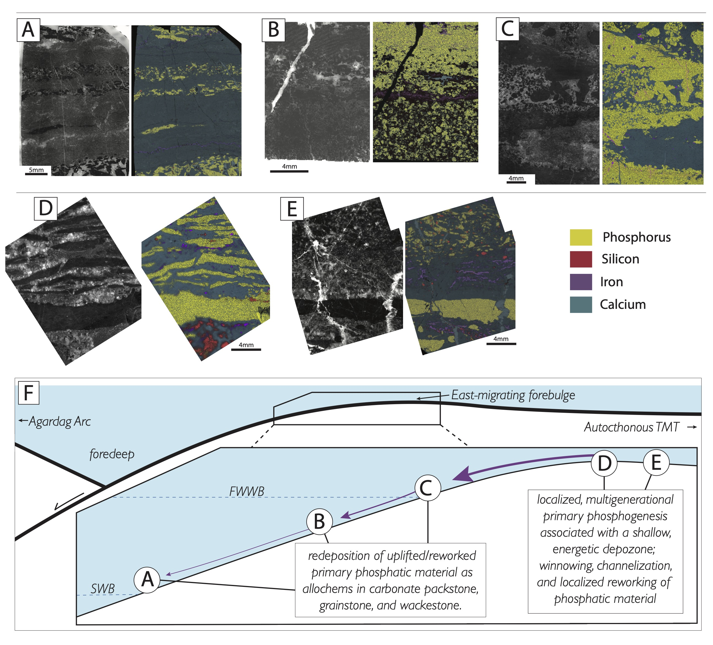
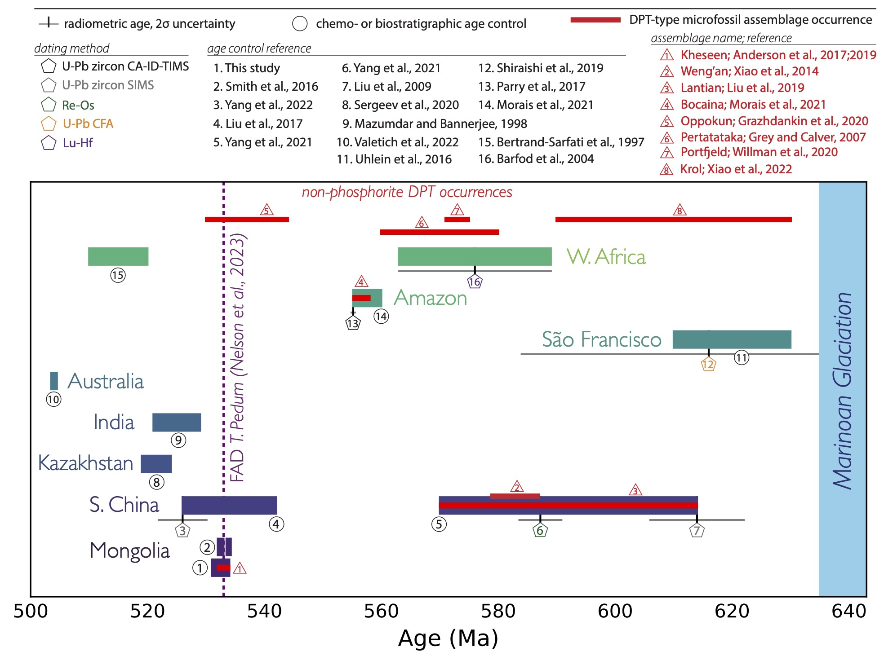
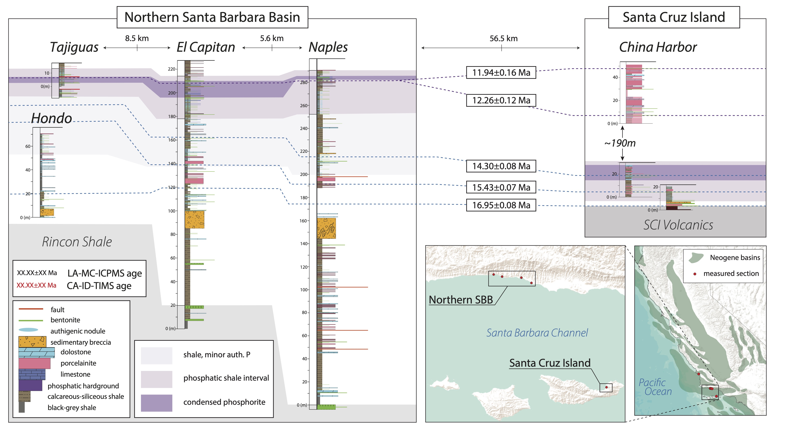
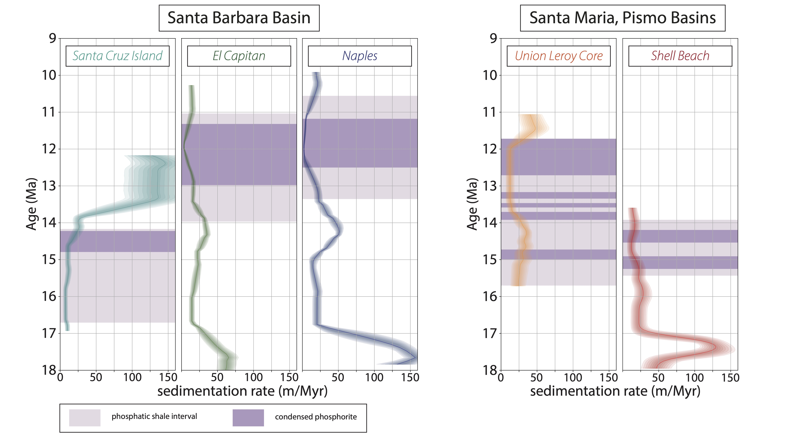
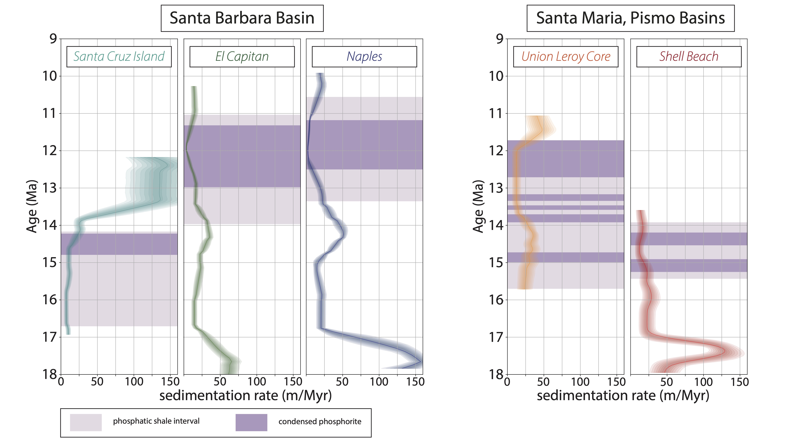

On geological timescales, phosphate is thought to be a limiting nutrient of bioproductivity, with phosphorus fluxes in Earth’s surface environments responding to changes in both silicate weathering and environmental redox state. The stratigraphic record preserves an apparent global increase in the size, grade, and frequency of concentrated phosphate deposits, or phosphorites, near the Ediacaran-Cambrian boundary, with the abundance and magnitude of phosphorites remaining high throughout much of the Phanerozoic rock record. These occurrences have inspired hypotheses that link a global increase in phosphate deposits around the Ediacaran-Cambrian boundary to changes in nutrient fluxes to the oceans, concomitant oxygenation of the Earth’s surface, and the rise and expansion of life. However, phosphorus delivery to the oceans is only one potential controlling aspect of phosphogenesis: sedimentological, paleotopographic, and biogenic factors have been shown to control the locus and concentration of phosphate accumulation in phosphogenic environments. To this end, detailed investigations that constrain the age, duration, and depositional context of individual phosphorite localities are a prerequisite of any holistic model for the drivers of phosphogenesis.
Spatiotemporal and tectonic constraints on a Cambrian phosphorite: the Kheseen Formation, Mongolia
-
 Over the course of several field seasons, I mapped and sampled stratgraphy of the Khuvsgul Group, Mongolia. A new age model for the Khuvsgul Group, combining U-Pb zircon geochronological constraints, biostratigraphy, and carbonate stable carbon isotope chemostratigraphy, is shown in panel A of the above figure (Anttila et al., 2025, in press); the new chemostratigraphic framework built for the Khuvsgul Group allows for correlative comparisons to global δ13C compilations (panel B, above), as well as to a chemostratigraphic framework for the Zavkhan Terrane (panel C, above). The new tectonostratigraphic model for the Khuvsgul Basin suggests that the phosphorites of the Kheseen Formation were deposited along the east-migrating forebulge axis of a proforeland basin between ca. 534 and 531 Ma; reworking of primary phosphatic material during the eastward migration of a paleotopographic high is reflected in the phosphorite facies (see figure below) observed across the present-day expression of the Khuvsgul Basin.
Over the course of several field seasons, I mapped and sampled stratgraphy of the Khuvsgul Group, Mongolia. A new age model for the Khuvsgul Group, combining U-Pb zircon geochronological constraints, biostratigraphy, and carbonate stable carbon isotope chemostratigraphy, is shown in panel A of the above figure (Anttila et al., 2025, in press); the new chemostratigraphic framework built for the Khuvsgul Group allows for correlative comparisons to global δ13C compilations (panel B, above), as well as to a chemostratigraphic framework for the Zavkhan Terrane (panel C, above). The new tectonostratigraphic model for the Khuvsgul Basin suggests that the phosphorites of the Kheseen Formation were deposited along the east-migrating forebulge axis of a proforeland basin between ca. 534 and 531 Ma; reworking of primary phosphatic material during the eastward migration of a paleotopographic high is reflected in the phosphorite facies (see figure below) observed across the present-day expression of the Khuvsgul Basin.
 The figure above depicts phosphorite facies of the Kheseen Formation, presented as a thick-section photograph (left) and micro-XRF-derived elemental map (right). A) phosphatic allochems within grainstone horizons in interbedded limestone grainstone and mudstone. B) fining upward grainstone predominantly composed of phosphatic grains, with infrequent void-filling micritic cement. C) cross-bedded phosphatic wackestone and limestone grainstone. Note variably angular phosphatic clasts in coarsest wackestone horizon. D) Phosphatic hardground and overlying intraclast breccia, with tabular phosphatic clasts supported in a limestone grainstone matrix. Note siliceous cementation of limestone grainstone below basal phosphatic hardground. E) Phosphatic hardground, below limestone grainstone and wackestone with angular phosphatic and chert allochems. F) cartoon schematic model of the Kheseen Fm. phosphogenic sedimentary environment. The putative depositional environments of phosphorite facies A-E are shown, with predominantly-reworked facies (A-C) occurring at or below fair-weather-wave base (FWWB), and likely above storm- wave base (SWB). Facies D and E are indicative of primary, multigenerational phosphogenesis in a shallow, energetic environment, likely on a banktop/local topographic high. The development of locally-variable topography was likely mediated by the eastward migration of a forebulge associated with the collision of the Agardag Arc. From Anttila et al., 2025 (in press).
-
Diachroneity of Ediacaran-Cambrian phosphogenesis:
A compilation of Ediacaran-Cambrian phosphorite ages, including those from our new age model for the Khuvsgul Basin and Kheseen Formation phosphorites, reveals that phosphogenesis occurred diachronously across more than 100 Myr during the Ediacaran and Cambrian (figure below; Anttila et al., 2025, in press). This suggests the influence of local processes, rather than a global increase in marine phosphorite abundance, may have been responsible for the apparent increase in phosphorites in the rock record across the Neoproterozoic-Phanerozoic transition. We suggest that a gradual increase in the redox potential of Earth's surface environments during this time may have allowed the redox gradients required to shuttle and precipitate authigenic phosphate to migrate into progressively deeper depozones, thus resulting in the incipience of phosphogenesis within depositional environments that are more likely (relative to terrestrial/shoreface environments) to be preserved in the rock record. Thus, the apparent increase in phosphogenesis during the Ediacaran and Cambrian reflects a redox-mediated shift in phosphogenic depositional environments towards deeper depozones.
 The Kheseen Formation also hosts a Doushantuo-Pertatataka-Type (DPT) microfossil assemblage. Our new age model constrains the Kheseen microbiota to be one of the youngest known DPT localities in the world, postdating the Weng'an Biota of the Doushantuo Formation by more than 40 million years. Additional collaborative work on this front is ongoing.
Recent Publications
- Anttila, E.S.C., Macdonald, F.A., Schoene, B., Gaynor, S., 2024. Cambrian foreland phosphogenesis in the Khuvsgul Basin of Mongolia. American Journal of Science, in press. Pre-print DOI:10.31223/X5V141.
- Anttila, E.S.C., Macdonald, F.A., and Bold, U., 2021. Stratigraphy of the Khuvsgul Group, Mongolia. Mongolian Geoscientist, 26(52), pp. 2-15. DOI:10.5564/mgs.v26i52.1516.
-
Miocene phosphogenesis in the Monterey Formation: also localized and diachronous
In addition to ages developed for northern Santa Barbara Basin exposures of the Monterey Formation (see Anttila et al., 2023), I have also developed age models (currently unpublished) for several other Monterey Formation localities, including Santa Cruz Island (see figure below). These sections, approximately 60km SSE of the northern Santa Barbara Basin sections, provide some insight into the drivers of phosphogenesis in the Santa Barbara Basin: phosphogenic intervals on the northern SBB are coeval with an expanded, biosiliceous and carbonaceous interval on Santa Cruz Island.  -
 This facies relationship is inverted during the Miocene Climatic optimum, which saw phosphogenesis occurring on a putative paleohigh above the newly-submerged Santa Cruz Island volcanics, while biosiliceous and carbonaceous facies dominated the northern SBB. These relationships suggest the dominant role of basinal paleotopography (e.g. the role of winnowing currents along paleohighs) in driving both the repetitive development of redoxoclines required to remobilize organic- and oxyhydroxide-bound phosphate and precipitate authigenic calcium fluorapatite (CFA), as well as concentrate recalcitrant authigenic phosphate nodules into lags that serve as substrates for future generations of CFA precipitation. Phosphatic intervals of the Monterey Formation are replete with evidence for reworking and sedimentary condensation (see photo at left, from Tajiguas Beach, CA, featuring both nodular CFA and a multigenerational phosphatic "hardground", built upon a condensed lag deposit of reworked CFA nodules). Further diachroneity is apparent across other Monterey Formation localities, including those from the Pismo and Santa Maria sub-basins to the north of the Santa Barbara Basin (see below, where sedimentation rate and the temporal extent of phosphatic strata are plotted against age for several different Monterey Formation localities).

This facies relationship is inverted during the Miocene Climatic optimum, which saw phosphogenesis occurring on a putative paleohigh above the newly-submerged Santa Cruz Island volcanics, while biosiliceous and carbonaceous facies dominated the northern SBB. These relationships suggest the dominant role of basinal paleotopography (e.g. the role of winnowing currents along paleohighs) in driving both the repetitive development of redoxoclines required to remobilize organic- and oxyhydroxide-bound phosphate and precipitate authigenic calcium fluorapatite (CFA), as well as concentrate recalcitrant authigenic phosphate nodules into lags that serve as substrates for future generations of CFA precipitation. Phosphatic intervals of the Monterey Formation are replete with evidence for reworking and sedimentary condensation (see photo at left, from Tajiguas Beach, CA, featuring both nodular CFA and a multigenerational phosphatic "hardground", built upon a condensed lag deposit of reworked CFA nodules). Further diachroneity is apparent across other Monterey Formation localities, including those from the Pismo and Santa Maria sub-basins to the north of the Santa Barbara Basin (see below, where sedimentation rate and the temporal extent of phosphatic strata are plotted against age for several different Monterey Formation localities).
